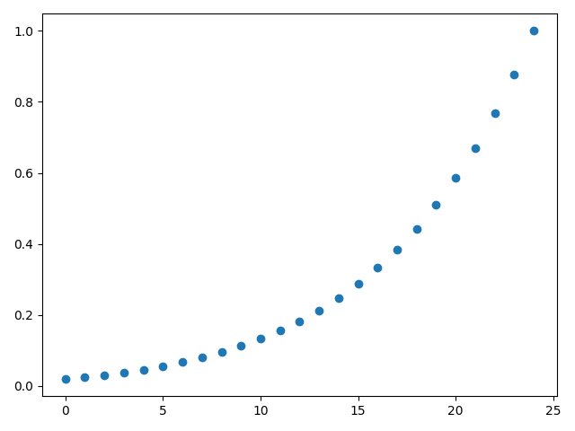
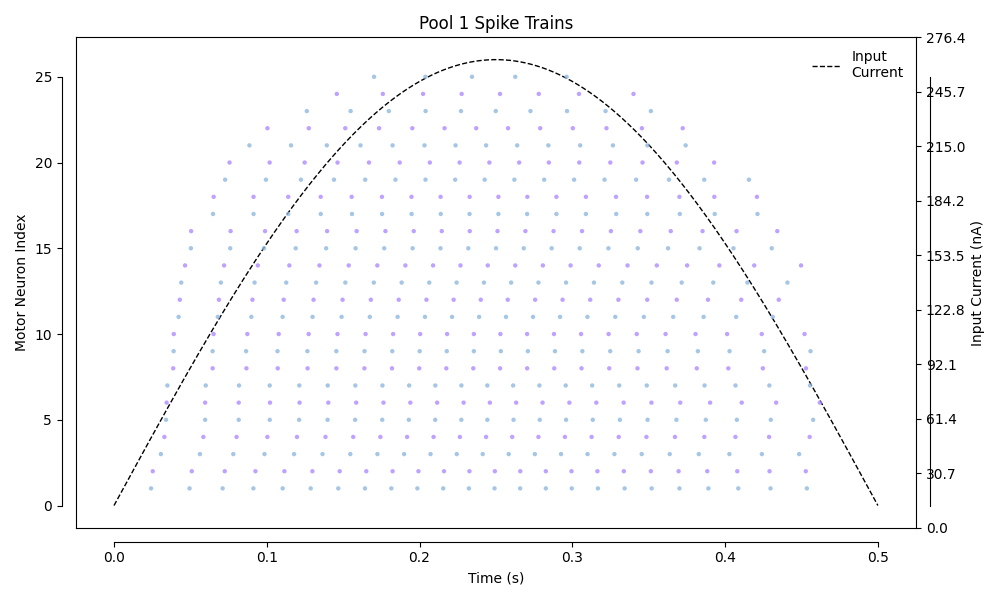
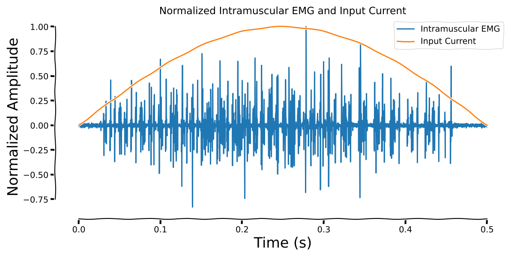

Note
Go to the end to download the full example code.
Intramuscular EMG Signals#
This example demonstrates how to simulate intramuscular EMG signals using needle electrodes. It shows the complete pipeline from muscle model creation to EMG signal generation with realistic noise and motor unit detectability.
Note
Intramuscular EMG (iEMG) is recorded using needle electrodes inserted directly into the muscle tissue. This provides high spatial resolution and allows for the detection of individual motor unit action potentials (MUAPs). Unlike surface EMG, intramuscular recordings can capture the activity of deeper motor units and provide better selectivity.
- Key Features:
High spatial resolution: Needle electrodes can detect individual MUAPs
Deep muscle access: Can record from muscles not accessible by surface electrodes
Motor unit discrimination: Individual motor units can be identified and tracked
Realistic noise modeling: Includes physiological noise and recording artifacts
Import Libraries#
import joblib
import matplotlib
import matplotlib.pyplot as plt
import numpy as np
import seaborn as sns
from myogen import simulator
from myogen.utils.currents import create_sinusoidal_current
from myogen.utils.plotting.spikes import plot_spike_trains
Define Parameters#
# Simulation parameters
N_motor_units = 25 # Smaller number for faster computation
recruitment_range = 50.0
# Electrode parameters
inter_electrode_distance = 0.5 # mm
electrode_position = (0.0, 0.0, 0.0) # mm (start of muscle)
Generate Motor Unit Recruitment Thresholds#
First, we generate the recruitment thresholds for the motor unit pool.
thresholds, _ = simulator.generate_mu_recruitment_thresholds(
N=N_motor_units,
recruitment_range__ratio=recruitment_range,
deluca__slope=5,
mode="combined",
)
plt.figure()
plt.plot(thresholds, "o")
plt.tight_layout()
plt.show()

Load Muscle Model#
Load the muscle model with the generated recruitment thresholds.
muscle = joblib.load("results/muscle_model.pkl")
muscle.length__mm = 30
Create Intramuscular Electrode Array#
Set up a differential needle electrode for intramuscular recordings.
electrode = simulator.IntramuscularElectrodeArray(
num_electrodes=4,
inter_electrode_distance__mm=inter_electrode_distance,
differentiation_mode="consecutive",
position__mm=electrode_position,
orientation__rad=(-np.pi / 2, 0, -np.pi / 2), # perpendicular to muscle
trajectory_distance__mm=0.125, # mm
trajectory_steps=1, # number of steps
)
Initialize Intramuscular EMG Simulator#
Create the intramuscular EMG simulator with the muscle model and electrode.
print("Initializing iEMG simulator...")
iemg_sim = simulator.IntramuscularEMG(
muscle_model=muscle,
electrode_array=electrode,
MUs_to_simulate=list(range(0, N_motor_units, 3)),
)
Initializing iEMG simulator...
Calculate Motor Unit Action Potentials#
Compute the MUAPs for each motor unit at the electrode positions.
print("Computing motor unit action potentials...")
iemg_sim.simulate_muaps()
print(f" - Generated MUAPs for {N_motor_units} motor units")
print(f" - Electrode array with {electrode.num_electrodes} electrodes")
Computing motor unit action potentials...
Creating motor unit simulators: 0%| | 0/9 [00:00<?, ?Simulator/s]
Creating motor unit simulators: 100%|██████████| 9/9 [00:00<00:00, 17292.14Simulator/s]
Setting up NMJ distributions: 0%| | 0/9 [00:00<?, ?Simulator/s]
Setting up NMJ distributions: 78%|███████▊ | 7/9 [00:00<00:00, 59.37Simulator/s]
Setting up NMJ distributions: 100%|██████████| 9/9 [00:00<00:00, 52.95Simulator/s]
MU 0: Calculating SFAPs: 0%| | 0/7 [00:00<?, ?fiber/s]
MU 0: Calculating SFAPs: 100%|██████████| 7/7 [00:00<00:00, 119.17fiber/s]
MU 1: Calculating SFAPs: 0%| | 0/39 [00:00<?, ?fiber/s]
MU 1: Calculating SFAPs: 33%|███▎ | 13/39 [00:00<00:00, 121.61fiber/s]
MU 1: Calculating SFAPs: 67%|██████▋ | 26/39 [00:00<00:00, 121.87fiber/s]
MU 1: Calculating SFAPs: 100%|██████████| 39/39 [00:00<00:00, 121.83fiber/s]
MU 1: Calculating SFAPs: 100%|██████████| 39/39 [00:00<00:00, 121.73fiber/s]
MU 2: Calculating SFAPs: 0%| | 0/61 [00:00<?, ?fiber/s]
MU 2: Calculating SFAPs: 21%|██▏ | 13/61 [00:00<00:00, 124.97fiber/s]
MU 2: Calculating SFAPs: 43%|████▎ | 26/61 [00:00<00:00, 126.75fiber/s]
MU 2: Calculating SFAPs: 64%|██████▍ | 39/61 [00:00<00:00, 127.12fiber/s]
MU 2: Calculating SFAPs: 85%|████████▌ | 52/61 [00:00<00:00, 127.37fiber/s]
MU 2: Calculating SFAPs: 100%|██████████| 61/61 [00:00<00:00, 127.13fiber/s]
MU 3: Calculating SFAPs: 0%| | 0/150 [00:00<?, ?fiber/s]
MU 3: Calculating SFAPs: 9%|▊ | 13/150 [00:00<00:01, 124.62fiber/s]
MU 3: Calculating SFAPs: 17%|█▋ | 26/150 [00:00<00:00, 124.34fiber/s]
MU 3: Calculating SFAPs: 26%|██▌ | 39/150 [00:00<00:00, 124.76fiber/s]
MU 3: Calculating SFAPs: 35%|███▍ | 52/150 [00:00<00:00, 124.85fiber/s]
MU 3: Calculating SFAPs: 43%|████▎ | 65/150 [00:00<00:00, 124.29fiber/s]
MU 3: Calculating SFAPs: 52%|█████▏ | 78/150 [00:00<00:00, 124.41fiber/s]
MU 3: Calculating SFAPs: 61%|██████ | 91/150 [00:00<00:00, 124.17fiber/s]
MU 3: Calculating SFAPs: 69%|██████▉ | 104/150 [00:00<00:00, 123.91fiber/s]
MU 3: Calculating SFAPs: 78%|███████▊ | 117/150 [00:00<00:00, 124.16fiber/s]
MU 3: Calculating SFAPs: 87%|████████▋ | 130/150 [00:01<00:00, 124.72fiber/s]
MU 3: Calculating SFAPs: 95%|█████████▌| 143/150 [00:01<00:00, 124.67fiber/s]
MU 3: Calculating SFAPs: 100%|██████████| 150/150 [00:01<00:00, 124.47fiber/s]
MU 4: Calculating SFAPs: 0%| | 0/200 [00:00<?, ?fiber/s]
MU 4: Calculating SFAPs: 6%|▋ | 13/200 [00:00<00:01, 124.41fiber/s]
MU 4: Calculating SFAPs: 13%|█▎ | 26/200 [00:00<00:01, 124.16fiber/s]
MU 4: Calculating SFAPs: 20%|█▉ | 39/200 [00:00<00:01, 123.86fiber/s]
MU 4: Calculating SFAPs: 26%|██▌ | 52/200 [00:00<00:01, 124.26fiber/s]
MU 4: Calculating SFAPs: 32%|███▎ | 65/200 [00:00<00:01, 124.38fiber/s]
MU 4: Calculating SFAPs: 39%|███▉ | 78/200 [00:00<00:00, 124.49fiber/s]
MU 4: Calculating SFAPs: 46%|████▌ | 91/200 [00:00<00:00, 124.13fiber/s]
MU 4: Calculating SFAPs: 52%|█████▏ | 104/200 [00:00<00:00, 124.10fiber/s]
MU 4: Calculating SFAPs: 58%|█████▊ | 117/200 [00:00<00:00, 124.24fiber/s]
MU 4: Calculating SFAPs: 65%|██████▌ | 130/200 [00:01<00:00, 124.61fiber/s]
MU 4: Calculating SFAPs: 72%|███████▏ | 143/200 [00:01<00:00, 124.94fiber/s]
MU 4: Calculating SFAPs: 78%|███████▊ | 156/200 [00:01<00:00, 125.14fiber/s]
MU 4: Calculating SFAPs: 84%|████████▍ | 169/200 [00:01<00:00, 125.05fiber/s]
MU 4: Calculating SFAPs: 91%|█████████ | 182/200 [00:01<00:00, 125.07fiber/s]
MU 4: Calculating SFAPs: 98%|█████████▊| 195/200 [00:01<00:00, 124.92fiber/s]
MU 4: Calculating SFAPs: 100%|██████████| 200/200 [00:01<00:00, 124.64fiber/s]
MU 5: Calculating SFAPs: 0%| | 0/173 [00:00<?, ?fiber/s]
MU 5: Calculating SFAPs: 7%|▋ | 12/173 [00:00<00:01, 111.31fiber/s]
MU 5: Calculating SFAPs: 14%|█▍ | 24/173 [00:00<00:01, 111.04fiber/s]
MU 5: Calculating SFAPs: 21%|██ | 36/173 [00:00<00:01, 110.38fiber/s]
MU 5: Calculating SFAPs: 28%|██▊ | 48/173 [00:00<00:01, 110.02fiber/s]
MU 5: Calculating SFAPs: 35%|███▍ | 60/173 [00:00<00:01, 109.51fiber/s]
MU 5: Calculating SFAPs: 41%|████ | 71/173 [00:00<00:00, 109.59fiber/s]
MU 5: Calculating SFAPs: 47%|████▋ | 82/173 [00:00<00:00, 109.63fiber/s]
MU 5: Calculating SFAPs: 54%|█████▍ | 94/173 [00:00<00:00, 109.99fiber/s]
MU 5: Calculating SFAPs: 61%|██████ | 105/173 [00:00<00:00, 109.94fiber/s]
MU 5: Calculating SFAPs: 68%|██████▊ | 117/173 [00:01<00:00, 110.13fiber/s]
MU 5: Calculating SFAPs: 75%|███████▍ | 129/173 [00:01<00:00, 110.20fiber/s]
MU 5: Calculating SFAPs: 82%|████████▏ | 141/173 [00:01<00:00, 109.97fiber/s]
MU 5: Calculating SFAPs: 88%|████████▊ | 153/173 [00:01<00:00, 110.32fiber/s]
MU 5: Calculating SFAPs: 95%|█████████▌| 165/173 [00:01<00:00, 110.51fiber/s]
MU 5: Calculating SFAPs: 100%|██████████| 173/173 [00:01<00:00, 110.22fiber/s]
MU 6: Calculating SFAPs: 0%| | 0/201 [00:00<?, ?fiber/s]
MU 6: Calculating SFAPs: 6%|▌ | 12/201 [00:00<00:01, 116.43fiber/s]
MU 6: Calculating SFAPs: 12%|█▏ | 24/201 [00:00<00:01, 116.73fiber/s]
MU 6: Calculating SFAPs: 18%|█▊ | 36/201 [00:00<00:01, 117.02fiber/s]
MU 6: Calculating SFAPs: 24%|██▍ | 48/201 [00:00<00:01, 116.80fiber/s]
MU 6: Calculating SFAPs: 30%|██▉ | 60/201 [00:00<00:01, 116.75fiber/s]
MU 6: Calculating SFAPs: 36%|███▌ | 72/201 [00:00<00:01, 117.45fiber/s]
MU 6: Calculating SFAPs: 42%|████▏ | 84/201 [00:00<00:00, 117.58fiber/s]
MU 6: Calculating SFAPs: 48%|████▊ | 96/201 [00:00<00:00, 117.70fiber/s]
MU 6: Calculating SFAPs: 54%|█████▎ | 108/201 [00:00<00:00, 118.33fiber/s]
MU 6: Calculating SFAPs: 60%|█████▉ | 120/201 [00:01<00:00, 118.29fiber/s]
MU 6: Calculating SFAPs: 66%|██████▌ | 132/201 [00:01<00:00, 118.10fiber/s]
MU 6: Calculating SFAPs: 72%|███████▏ | 144/201 [00:01<00:00, 117.93fiber/s]
MU 6: Calculating SFAPs: 78%|███████▊ | 156/201 [00:01<00:00, 118.15fiber/s]
MU 6: Calculating SFAPs: 84%|████████▎ | 168/201 [00:01<00:00, 118.07fiber/s]
MU 6: Calculating SFAPs: 90%|████████▉ | 180/201 [00:01<00:00, 118.27fiber/s]
MU 6: Calculating SFAPs: 96%|█████████▌| 192/201 [00:01<00:00, 118.61fiber/s]
MU 6: Calculating SFAPs: 100%|██████████| 201/201 [00:01<00:00, 117.85fiber/s]
MU 7: Calculating SFAPs: 0%| | 0/261 [00:00<?, ?fiber/s]
MU 7: Calculating SFAPs: 5%|▍ | 12/261 [00:00<00:02, 114.83fiber/s]
MU 7: Calculating SFAPs: 9%|▉ | 24/261 [00:00<00:02, 115.30fiber/s]
MU 7: Calculating SFAPs: 14%|█▍ | 36/261 [00:00<00:01, 114.49fiber/s]
MU 7: Calculating SFAPs: 18%|█▊ | 48/261 [00:00<00:01, 114.74fiber/s]
MU 7: Calculating SFAPs: 23%|██▎ | 60/261 [00:00<00:01, 114.28fiber/s]
MU 7: Calculating SFAPs: 28%|██▊ | 72/261 [00:00<00:01, 113.99fiber/s]
MU 7: Calculating SFAPs: 32%|███▏ | 84/261 [00:00<00:01, 114.02fiber/s]
MU 7: Calculating SFAPs: 37%|███▋ | 96/261 [00:00<00:01, 113.99fiber/s]
MU 7: Calculating SFAPs: 41%|████▏ | 108/261 [00:00<00:01, 113.67fiber/s]
MU 7: Calculating SFAPs: 46%|████▌ | 120/261 [00:01<00:01, 113.37fiber/s]
MU 7: Calculating SFAPs: 51%|█████ | 132/261 [00:01<00:01, 112.79fiber/s]
MU 7: Calculating SFAPs: 55%|█████▌ | 144/261 [00:01<00:01, 112.40fiber/s]
MU 7: Calculating SFAPs: 60%|█████▉ | 156/261 [00:01<00:00, 112.71fiber/s]
MU 7: Calculating SFAPs: 64%|██████▍ | 168/261 [00:01<00:00, 113.13fiber/s]
MU 7: Calculating SFAPs: 69%|██████▉ | 180/261 [00:01<00:00, 112.78fiber/s]
MU 7: Calculating SFAPs: 74%|███████▎ | 192/261 [00:01<00:00, 112.85fiber/s]
MU 7: Calculating SFAPs: 78%|███████▊ | 204/261 [00:01<00:00, 113.12fiber/s]
MU 7: Calculating SFAPs: 83%|████████▎ | 216/261 [00:01<00:00, 112.92fiber/s]
MU 7: Calculating SFAPs: 87%|████████▋ | 228/261 [00:02<00:00, 112.93fiber/s]
MU 7: Calculating SFAPs: 92%|█████████▏| 240/261 [00:02<00:00, 113.28fiber/s]
MU 7: Calculating SFAPs: 97%|█████████▋| 252/261 [00:02<00:00, 113.48fiber/s]
MU 7: Calculating SFAPs: 100%|██████████| 261/261 [00:02<00:00, 113.40fiber/s]
MU 8: Calculating SFAPs: 0%| | 0/296 [00:00<?, ?fiber/s]
MU 8: Calculating SFAPs: 4%|▍ | 12/296 [00:00<00:02, 112.69fiber/s]
MU 8: Calculating SFAPs: 8%|▊ | 24/296 [00:00<00:02, 112.00fiber/s]
MU 8: Calculating SFAPs: 12%|█▏ | 36/296 [00:00<00:02, 112.95fiber/s]
MU 8: Calculating SFAPs: 16%|█▌ | 48/296 [00:00<00:02, 114.01fiber/s]
MU 8: Calculating SFAPs: 20%|██ | 60/296 [00:00<00:02, 114.04fiber/s]
MU 8: Calculating SFAPs: 24%|██▍ | 72/296 [00:00<00:01, 114.07fiber/s]
MU 8: Calculating SFAPs: 28%|██▊ | 84/296 [00:00<00:01, 114.42fiber/s]
MU 8: Calculating SFAPs: 32%|███▏ | 96/296 [00:00<00:01, 114.23fiber/s]
MU 8: Calculating SFAPs: 36%|███▋ | 108/296 [00:00<00:01, 114.34fiber/s]
MU 8: Calculating SFAPs: 41%|████ | 120/296 [00:01<00:01, 114.55fiber/s]
MU 8: Calculating SFAPs: 45%|████▍ | 132/296 [00:01<00:01, 114.68fiber/s]
MU 8: Calculating SFAPs: 49%|████▊ | 144/296 [00:01<00:01, 114.26fiber/s]
MU 8: Calculating SFAPs: 53%|█████▎ | 156/296 [00:01<00:01, 113.70fiber/s]
MU 8: Calculating SFAPs: 57%|█████▋ | 168/296 [00:01<00:01, 113.14fiber/s]
MU 8: Calculating SFAPs: 61%|██████ | 180/296 [00:01<00:01, 113.19fiber/s]
MU 8: Calculating SFAPs: 65%|██████▍ | 192/296 [00:01<00:00, 112.73fiber/s]
MU 8: Calculating SFAPs: 69%|██████▉ | 204/296 [00:01<00:00, 112.89fiber/s]
MU 8: Calculating SFAPs: 73%|███████▎ | 216/296 [00:01<00:00, 113.34fiber/s]
MU 8: Calculating SFAPs: 77%|███████▋ | 228/296 [00:02<00:00, 113.39fiber/s]
MU 8: Calculating SFAPs: 81%|████████ | 240/296 [00:02<00:00, 113.50fiber/s]
MU 8: Calculating SFAPs: 85%|████████▌ | 252/296 [00:02<00:00, 113.78fiber/s]
MU 8: Calculating SFAPs: 89%|████████▉ | 264/296 [00:02<00:00, 113.65fiber/s]
MU 8: Calculating SFAPs: 93%|█████████▎| 276/296 [00:02<00:00, 113.18fiber/s]
MU 8: Calculating SFAPs: 97%|█████████▋| 288/296 [00:02<00:00, 113.24fiber/s]
MU 8: Calculating SFAPs: 100%|██████████| 296/296 [00:02<00:00, 113.57fiber/s]
Computing MUAPs: 0%| | 0/9 [00:00<?, ?MU/s]
Computing MUAPs: 100%|██████████| 9/9 [00:00<00:00, 26905.73MU/s]
- Generated MUAPs for 25 motor units
- Electrode array with 4 electrodes
Create Motor Neuron Pool#
Set up the motor neuron pool for spike train generation.
mn_pool = simulator.MotorNeuronPool(recruitment_thresholds=thresholds)
mvc_current = mn_pool.mvc_current_threshold
Creating motor neuron pools: 0%| | 0/1 [00:00<?, ?pool/s]
Creating motor neuron pools: 100%|██████████| 1/1 [00:00<00:00, 78.43pool/s]
Injecting currents into pools: 0%| | 0/1 [00:00<?, ?pool/s]
Adding noise to neurons in pool: 0%| | 0/25 [00:00<?, ?neuron/s]
Injecting currents into pools: 100%|██████████| 1/1 [00:00<00:00, 105.09pool/s]
Creating motor neuron pools: 0%| | 0/1 [00:00<?, ?pool/s]
Creating motor neuron pools: 100%|██████████| 1/1 [00:00<00:00, 86.77pool/s]
Injecting currents into pools: 0%| | 0/1 [00:00<?, ?pool/s]
Adding noise to neurons in pool: 0%| | 0/25 [00:00<?, ?neuron/s]
Injecting currents into pools: 100%|██████████| 1/1 [00:00<00:00, 104.94pool/s]
Creating motor neuron pools: 0%| | 0/1 [00:00<?, ?pool/s]
Creating motor neuron pools: 100%|██████████| 1/1 [00:00<00:00, 87.29pool/s]
Injecting currents into pools: 0%| | 0/1 [00:00<?, ?pool/s]
Adding noise to neurons in pool: 0%| | 0/25 [00:00<?, ?neuron/s]
Injecting currents into pools: 100%|██████████| 1/1 [00:00<00:00, 105.77pool/s]
Creating motor neuron pools: 0%| | 0/1 [00:00<?, ?pool/s]
Creating motor neuron pools: 100%|██████████| 1/1 [00:00<00:00, 79.63pool/s]
Injecting currents into pools: 0%| | 0/1 [00:00<?, ?pool/s]
Adding noise to neurons in pool: 0%| | 0/25 [00:00<?, ?neuron/s]
Injecting currents into pools: 100%|██████████| 1/1 [00:00<00:00, 105.13pool/s]
Creating motor neuron pools: 0%| | 0/1 [00:00<?, ?pool/s]
Creating motor neuron pools: 100%|██████████| 1/1 [00:00<00:00, 87.62pool/s]
Injecting currents into pools: 0%| | 0/1 [00:00<?, ?pool/s]
Adding noise to neurons in pool: 0%| | 0/25 [00:00<?, ?neuron/s]
Injecting currents into pools: 100%|██████████| 1/1 [00:00<00:00, 105.95pool/s]
Creating motor neuron pools: 0%| | 0/1 [00:00<?, ?pool/s]
Creating motor neuron pools: 100%|██████████| 1/1 [00:00<00:00, 89.21pool/s]
Injecting currents into pools: 0%| | 0/1 [00:00<?, ?pool/s]
Adding noise to neurons in pool: 0%| | 0/25 [00:00<?, ?neuron/s]
Injecting currents into pools: 100%|██████████| 1/1 [00:00<00:00, 105.73pool/s]
Creating motor neuron pools: 0%| | 0/1 [00:00<?, ?pool/s]
Creating motor neuron pools: 100%|██████████| 1/1 [00:00<00:00, 81.77pool/s]
Injecting currents into pools: 0%| | 0/1 [00:00<?, ?pool/s]
Adding noise to neurons in pool: 0%| | 0/25 [00:00<?, ?neuron/s]
Injecting currents into pools: 100%|██████████| 1/1 [00:00<00:00, 106.04pool/s]
Creating motor neuron pools: 0%| | 0/1 [00:00<?, ?pool/s]
Creating motor neuron pools: 100%|██████████| 1/1 [00:00<00:00, 88.27pool/s]
Injecting currents into pools: 0%| | 0/1 [00:00<?, ?pool/s]
Adding noise to neurons in pool: 0%| | 0/25 [00:00<?, ?neuron/s]
Injecting currents into pools: 100%|██████████| 1/1 [00:00<00:00, 104.65pool/s]
Creating motor neuron pools: 0%| | 0/1 [00:00<?, ?pool/s]
Creating motor neuron pools: 100%|██████████| 1/1 [00:00<00:00, 88.28pool/s]
Injecting currents into pools: 0%| | 0/1 [00:00<?, ?pool/s]
Adding noise to neurons in pool: 0%| | 0/25 [00:00<?, ?neuron/s]
Injecting currents into pools: 100%|██████████| 1/1 [00:00<00:00, 105.51pool/s]
Creating motor neuron pools: 0%| | 0/1 [00:00<?, ?pool/s]
Creating motor neuron pools: 100%|██████████| 1/1 [00:00<00:00, 81.72pool/s]
Injecting currents into pools: 0%| | 0/1 [00:00<?, ?pool/s]
Adding noise to neurons in pool: 0%| | 0/25 [00:00<?, ?neuron/s]
Injecting currents into pools: 100%|██████████| 1/1 [00:00<00:00, 106.08pool/s]
Creating motor neuron pools: 0%| | 0/1 [00:00<?, ?pool/s]
Creating motor neuron pools: 100%|██████████| 1/1 [00:00<00:00, 88.61pool/s]
Injecting currents into pools: 0%| | 0/1 [00:00<?, ?pool/s]
Adding noise to neurons in pool: 0%| | 0/25 [00:00<?, ?neuron/s]
Injecting currents into pools: 100%|██████████| 1/1 [00:00<00:00, 103.90pool/s]
Generate Input Currents#
Create a sinusoidal current profile for the contraction simulation.
n_pools = 2 # Number of distinct motor neuron pools
timestep = 0.01 # Simulation timestep in ms (high resolution)
simulation_time = 500 # Total simulation duration in ms
# Calculate number of time points
t_points = int(simulation_time / timestep)
# Create the input current matrix
sin_amplitudes = [
mvc_current * 1,
mvc_current * 1,
] # Same amplitude for both pools
sin_frequencies = [1.0, 1.0] # Same frequency for both pools (1 Hz)
sin_offsets = [
0.0,
0.0,
]
sin_phases = [0.0, np.pi] # 0 and 90 degrees (in radians)
sinusoidal_currents = create_sinusoidal_current(
n_pools=n_pools,
t_points=t_points,
timestep__ms=timestep,
amplitudes__muV=sin_amplitudes,
frequencies__Hz=sin_frequencies,
offsets__muV=sin_offsets,
phases__rad=sin_phases,
)
Generate Spike Trains#
Simulate the neural spike trains using the motor neuron pool.
print("Generating spike trains...")
spike_trains, active_indices, _ = mn_pool.generate_spike_trains(
input_current__matrix=sinusoidal_currents, timestep__ms=timestep
)
print(f" - Generated spike trains for {len(active_indices)} active motor units")
print(f" - Total simulation time: {simulation_time} ms")
Generating spike trains...
Creating motor neuron pools: 0%| | 0/2 [00:00<?, ?pool/s]
Creating motor neuron pools: 100%|██████████| 2/2 [00:00<00:00, 90.89pool/s]
Injecting currents into pools: 0%| | 0/2 [00:00<?, ?pool/s]
Adding noise to neurons in pool: 0%| | 0/25 [00:00<?, ?neuron/s]
Injecting currents into pools: 50%|█████ | 1/2 [00:00<00:00, 7.88pool/s]
Adding noise to neurons in pool: 0%| | 0/25 [00:00<?, ?neuron/s]
Injecting currents into pools: 100%|██████████| 2/2 [00:00<00:00, 7.88pool/s]
Injecting currents into pools: 100%|██████████| 2/2 [00:00<00:00, 7.88pool/s]
- Generated spike trains for 2 active motor units
- Total simulation time: 500 ms
Visualize Spike Trains#
Display the spike trains generated by the motor neuron pool in response to the sinusoidal input current. This shows the neural firing patterns that will be convolved with the MUAPs to generate the final EMG signal.
spike_fig, spike_ax = plt.subplots(figsize=(10, 6))
plot_spike_trains(
spike_trains__matrix=spike_trains,
timestep__ms=timestep,
axs=[spike_ax],
pool_current__matrix=sinusoidal_currents,
pool_to_plot=[0], # Show only the first pool
)
plt.tight_layout()
plt.show()

Simulate Intramuscular EMG#
Generate the final intramuscular EMG signals by convolving spike trains with MUAPs.
print("Simulating intramuscular EMG signals...")
emg_signals = iemg_sim.simulate_intramuscular_emg(
motor_neuron_pool=mn_pool,
)
print("Intramuscular EMG simulation completed!")
print(f" - EMG signal shape: {emg_signals.shape}")
print(f" - Signal RMS (before noise): {np.sqrt(np.mean(emg_signals**2)):.3f} nA")
print("Adding realistic noise (SNR = 20 dB)...")
noisy_emg_signals = iemg_sim.add_noise(snr_db=20)
print(f" - Signal RMS (after noise): {np.sqrt(np.mean(noisy_emg_signals**2)):.3f} nA")
Simulating intramuscular EMG signals...
Intramuscular EMG (CPU): 0%| | 0/2 [00:00<?, ?pool/s]
Intramuscular EMG (CPU): 50%|█████ | 1/2 [00:00<00:00, 5.58pool/s]
Intramuscular EMG (CPU): 100%|██████████| 2/2 [00:00<00:00, 11.14pool/s]
Intramuscular EMG simulation completed!
- EMG signal shape: (2, 4, 5120)
- Signal RMS (before noise): 0.153 nA
Adding realistic noise (SNR = 20 dB)...
- Signal RMS (after noise): 0.153 nA
Visualize Intramuscular EMG Results#
Create an xkcd-style plot comparing the intramuscular EMG signal with the input current, similar to the surface EMG example.
Note
The intramuscular EMG provides high spatial resolution and can detect individual motor unit action potentials (MUAPs) with excellent signal quality.
# Clear matplotlib cache and set up xkcd style
matplotlib.get_cachedir()
with plt.xkcd():
plt.rcParams.update({"font.size": 24})
# Create single plot with normalized signals
fig, ax = plt.subplots(figsize=(12, 6))
# Get the signals - use first electrode's differential recording
iemg_signal = noisy_emg_signals[0, 0, :] # First electrode differential pair
current_signal = sinusoidal_currents[0] # First current pool
# Create time axes
emg_time = (
np.arange(len(iemg_signal)) / iemg_sim.sampling_frequency__Hz
) # Convert to seconds
current_time = mn_pool.times / 1000
# Normalize iEMG signal by dividing by maximum absolute value
iemg_normalized = iemg_signal / np.max(np.abs(iemg_signal))
# Normalize current between 0 and 1
current_normalized = (current_signal - np.min(current_signal)) / (
np.max(current_signal) - np.min(current_signal)
)
# Plot both normalized signals
ax.plot(
emg_time,
iemg_normalized,
linewidth=2,
label="Intramuscular EMG",
)
with plt.xkcd():
ax.plot(
current_time,
current_normalized,
linewidth=2,
label="Input Current",
)
ax.set_xlabel("Time (s)")
ax.set_ylabel("Normalized Amplitude")
ax.grid(True, alpha=0.3)
ax.legend()
sns.despine(trim=True, left=False, bottom=False, right=True, top=True, offset=5)
plt.title("Normalized Intramuscular EMG and Input Current")
plt.tight_layout()
plt.show()

Total running time of the script: (1 minutes 21.512 seconds)